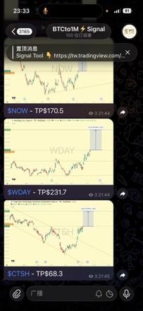

分批進場怎麼分
一季的錢，每天買一點——但先等指標告訴你「現在算便宜」。方法整理，無時效性行情數據；不構成投資建議。
先講結論｜分批的目的不是買到最低點，是把成本平滑化——成本平滑化的意思是：你不是用某一天的價格買進，而是用這段期間的平均價買進。你放棄了「剛好買在最低點」的可能，換到的是「不會把全部的錢押在錯的那一天」。而在相對低的區間才啟動分批，等於是把這條平均線整條往下拉。
BTC：90–120 天
同一時間、同一金額
先搞清楚：「三個月」要除以幾
- 美股一個月大約只有 20 個交易日。週末不開盤，還有國定假日。所以三個月是 60 個交易日、四個月是 80 個——不是 90 天、120 天。拿 90 去除，你實際會買到四個半月，尾巴那一段早就不是當初的便宜區了。
- BTC 是 365 天無休，才是真的除以天數。三個月就是 90 天，四個月就是 120 天，週末照買。
- 兩邊都買的人，用「幾個月」對齊，不要用「幾天」對齊。目標是三、四個月內買完，除數各自算各自的。
每次到底買多少：直接查表
| 這一季的預算 | 美股 3 個月 ÷ 60 交易日 | 美股 4 個月 ÷ 80 交易日 | BTC 3 個月 ÷ 90 天 | BTC 4 個月 ÷ 120 天 |
|---|---|---|---|---|
| 30,000 | 500 | 375 | 333 | 250 |
| 100,000 | 1,667 | 1,250 | 1,111 | 833 |
| 300,000 | 5,000 | 3,750 | 3,333 | 2,500 |
說明：單次金額＝預算 ÷ 次數，四捨五入到整數。交易日以每月 20 日估算（一年約 250 個交易日，扣掉週末與假日）；實際會因當年假期少幾天，差幾天不影響結論。幣別不影響算法，換成美元一樣除。如果你的標的有最低下單金額（部分券商、或交易所的最小下單量），把「每個交易日」改成「每週一次」，次數同步改成 13 次（3 個月）或 17 次（4 個月），邏輯完全不變。
為什麼是一季，不是一次買完、也不是攤一整年
- 一次買完，你等於把三個月的判斷全押在一天上。那一天剛好是這段期間的最高價，機率不高，但真的發生你會很久都翻不了身——而且你自己也知道有這個風險，所以會遲遲不敢按下去，最後變成什麼都沒買。
- 攤一整年，便宜區早就結束了。你是因為「現在相對便宜」才開始買的，這個判斷通常撐不了十二個月。買到後面，你其實是在用一個過期的理由買進，價格早就不是當初讓你心動的價格。
- 三到四個月剛好蓋住一次像樣的回檔。回檔就是從高點往下修正的那一段。多數回檔的落底過程要幾週到幾個月，用一季去接，接得到底部區間，也不至於拖到訊號失效。
- 每天買，是為了讓你不用做決定。改成「跌多才多買」聽起來更聰明，但那要求你每天判斷、每天有紀律。固定金額、固定時間，設好自動扣款或定期定額功能，執行率才會是 100%。一套 80 分但你做得到的方法，勝過 100 分但你只做兩週的方法。
- 買完就停，不要順手續攤。一季結束就是結束，重新評估、重新等訊號。不然這套方法會退化成「無腦一直買」，你會在最貴的時候買進最多。
一個常見誤會｜分批不會讓你的報酬變高，它讓你的結果變穩。如果標的從你開始買的那天就一路漲，一次買完的報酬一定比分批高——這是分批的成本，事先要認。你換到的是：萬一它先跌了三個月，你不會全部套在第一天，而且還買到了更多便宜的部位。
我自己看 KD，低於 20 才啟動
- KD 是在講「現在的價格站在最近這段區間的哪個位置」。它把最近一段期間的最高價、最低價拉出來，看今天的收盤價落在哪裡，換算成 0 到 100 的分數。接近 100 代表貼著這段期間的高點，接近 0 代表貼著低點。K 是快線、D 是慢線（D 是 K 平滑過的版本，反應比較鈍）。
- 我的規則：KD 低於 20，就視為進到相對便宜區，開始執行。低於 20 表示現在的價格靠近這段期間的下緣。這不是預測，只是一個「相對位置便宜」的客觀描述。
- 日線、週線都可以看，差別在節奏。日線訊號多、來得快，一年可能出現好幾次，適合預算比較小、想常常有機會進場的人；週線一次涵蓋的區間長很多，訊號少但每次都比較有份量，跟「要買三、四個月」的節奏更合。我的建議是用週線決定要不要啟動，用日線決定哪天開始扣。
- 你的看盤軟體裡本來就有。TradingView、券商 App、交易所 App 的指標清單裡找 KD 或 Stochastic（KD 的英文名），加上去就會顯示，參數用預設的 9、3、3 即可，不用調。
除了 KD，這三個也能用
- 長期均線的相對位置。均線就是過去 N 期收盤價的平均。看價格有沒有跌到 200 週均線（BTC 常用）或 200 日均線（美股常用）附近。限制：它只告訴你「比長期平均便宜」，強勢的標的可能好幾年都碰不到，你會等到天荒地老。
- 距離前高的回檔幅度。設一個門檻，例如從歷史高點回落到只要再漲 40% 就能回去的位置（也就是回檔約 29%），就當作進場區。限制：下跌 50% 之後再跌 50% 是完全可能的，這個標準無法分辨「便宜」與「這家公司出事了」。
- 市場情緒指標。恐懼貪婪指數（Fear & Greed Index）進到極度恐懼，或 BTC 的 MVRV（市值 ÷ 所有幣的平均買入成本，低於 1 代表市場整體處於帳面虧損）偏低。限制：情緒可以更恐懼、更久，它給你的是區間不是時點——所以更要分批，不能一次押。
- 挑一個就好，不要三個都看。指標愈多，愈容易「總有一個沒到」，然後永遠不動手。先選一個寫下來，之後再改。
風險提醒｜指標只是機率上比較好的起點，不是保證。KD 低於 20 之後繼續跌是常態，甚至可以在低檔待上好幾個月——這正是我們要分成三、四個月慢慢買的原因，而不是訊號一到就全押。反過來也要認：訊號沒到就是不買，而你有可能整段行情都在場外看著。這是這套規則的代價，接受不了就不要用它。
| 方式 | 怎麼做 | 適合誰 | 要付出的代價 |
|---|---|---|---|
| 定期定額 | 每月固定日期、固定金額，不看價格、不設終點，一直買下去。 | 沒時間看盤、也不想判斷的人。設定一次就結束。 | 貴的時候照買。長期下來成本會是「市場平均」，不會比平均好。 |
| 季度每日 （本頁主方法） |
等 KD 低於 20 才啟動，把一季預算除以三到四個月的次數（美股 60–80 個交易日、BTC 90–120 天），每次買固定金額，買完就停。 | 願意等訊號、想把成本壓在相對低檔的人。 | 要等，而且可能等很久。訊號不來的期間，你的錢是閒著的。 |
| 逢跌加碼 | 先設好級距，例如每再跌 10% 就投入一筆，跌愈多投愈多。 | 手上有一筆現金、想把子彈留給更深的跌幅的人。 | 沒跌就完全沒買到。而且真的一路跌下去時，你要有膽子照表操課。 |
| 分層掛單 | 把目標區間切成幾層價格，每層都預先掛好買單，成交了就成交，沒成交就掛著。 | 用交易所或有掛單功能的券商、不想每天盯的人。 | 要先想清楚每層的價格和金額。掛太低整組不成交，等於沒進場。 |
四種可以混。常見組合是「定期定額當底、季度每日當加碼」：不管行情如何，每月固定買一份當基本部位；等 KD 進到便宜區，再把額外那筆錢用季度每日的方式打進去。這樣你不會完全錯過行情，也保留了在低檔多買的能力。
在心裡選好答案，再點開「看解讀」。先看解讀會影響你的答案，那這六題就白做了。
1. 如果從你買進的那天起，它再跌 30%，你會？
- 照原訂計畫繼續每天買
- 先停手，看看再說
- 睡不著，想全部賣掉
看解讀
選 A｜部位大小是對的，繼續。
選 B 或 C｜不是你的判斷有問題，是你的部位開太大了。把每次的金額砍半，總預算砍半，重新問自己這一題。答案變成 A 為止——那個金額才是你真正承受得起的金額。
2. 如果它從今天起頭也不回一路漲，而你手上一股都沒有——
- 可以接受，本來就不是每一波都要參與
- 會很不甘心，但不至於做傻事
- 會忍不住追高
看解讀
選 A｜你適合嚴格等訊號。
選 B 或 C｜你等待的心理成本比你以為的高。純等訊號的方法你撐不住，最後一定會在最貴的時候破功。改用混合：先用定期定額買一小份（例如總預算的三成）壓住不甘心，剩下七成留給訊號。
3. 這筆錢，你多久之內會用到？
- 三年以上都用不到
- 一到三年之間可能會用到
- 一年內就要用（房租、學費、周轉）
看解讀
選 A｜可以進場。
選 B｜只投入其中一部分，並且要接受用錢那天可能是虧的。
選 C｜不要進場。再好的方法都救不了「被迫在低點賣出」。這種錢留現金，這一題沒有討論空間。
4. 你打算抱多久？
- 三年以上
- 一年左右
- 看情況，隨時可能賣
看解讀
選 A｜那三個月內的進場價差，對你最後的報酬影響很小。你為了那幾個百分點焦慮了好幾週，值得嗎？直接開始執行。
選 B｜進場點的重要性上升，訊號要抓得更嚴。
選 C｜你要的其實是短線交易，那需要的是停損紀律，分批幫不了你。
5. 你現在遲遲不動手，是在等什麼？
- 等我設定的指標到條件
- 等更便宜的價格
- 等「感覺安全一點」再說
看解讀
選 A｜這是有規則的等待，很好。
選 B｜多便宜才算便宜？講不出一個具體數字，就不是在等，是在拖。現在就寫下來。
選 C｜注意，這跟 B 是互斥的兩件事。市場讓人感覺安全的時候，通常已經漲一段了；真正便宜的時候，感覺一定很糟。你不可能同時等到「便宜」和「安心」。
6. 上一次你說「再等等」，後來實際發生了什麼？
- 真的等到更低的價格，也真的買了
- 沒等到，後來用更高的價格追進去
- 忘了這件事，到現在根本沒買
看解讀
選 A｜恭喜，但請誠實回想：這是第幾次成功？
選 B 或 C｜你缺的不是判斷力，是一套不用判斷也會自動執行的規則。這正是本頁在講的東西——把決定寫成規則，剩下的交給執行。
這六題的重點｜不是要你答對，是要你發現：大部分人卡住的地方不是「買在哪個價格」，而是部位太大、錢的期限不對、或根本沒有規則。而分批的價值就在這裡——它讓你不必每題都答對，也不會出局。
加入 Telegram 頻道！
有好的進出場時機時，會第一時間在 Telegram 內通知。
只要註冊 LBank 交易所（只需一分鐘即可完成註冊），就可以免費加入這個頻道，還會加碼贈送價值 100 美元的交易指標！
免費加入 Telegram 頻道https://t.me/acssun_bot
